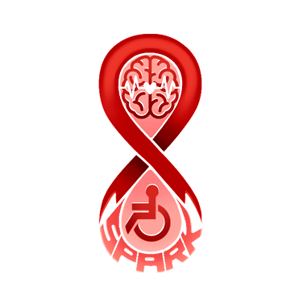
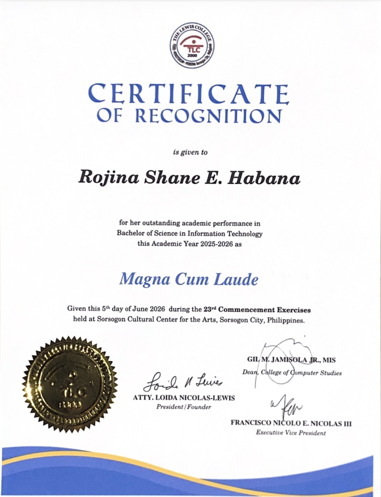
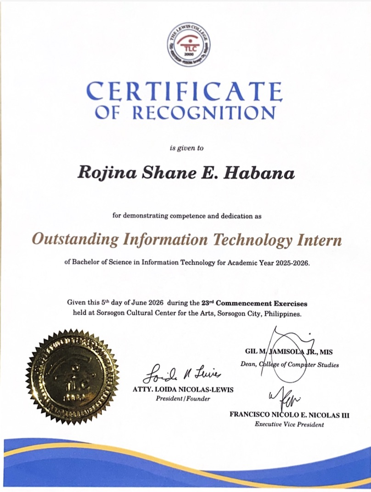
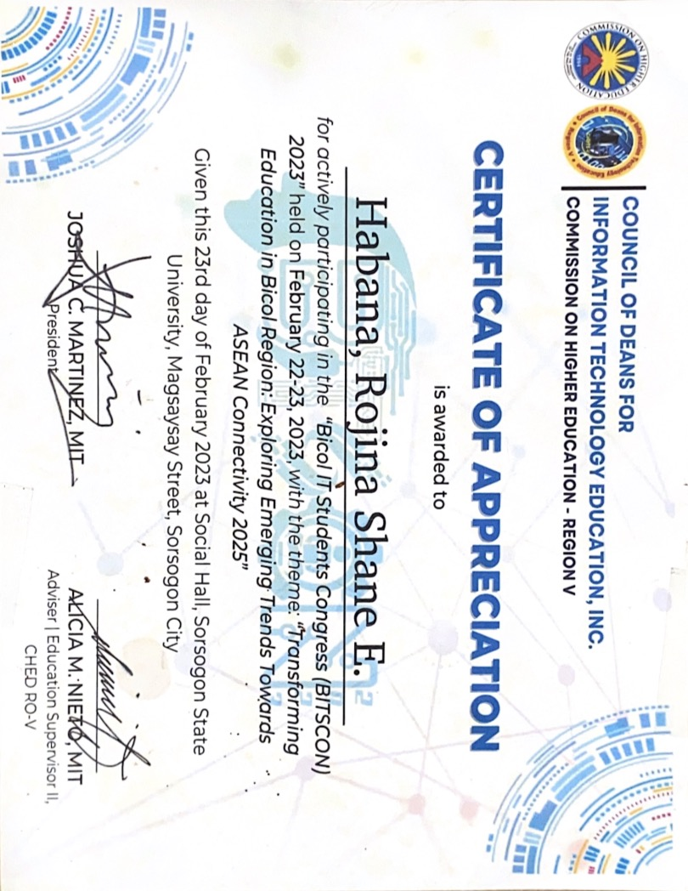

BSIT Graduate · Analyst· IT Support
Bachelor of Science in Information Technology graduate with hands-on experience in technical support, hardware and software troubleshooting, network connectivity, computer maintenance, and end-user assistance — gained through an internship with the Department of Education, Schools Division of Sorsogon City. Also experienced in secretariat and administrative support, detail-oriented, adaptable, and committed to reliable, efficient support in an entry-level IT role.
Applications and systems I've built.
Capstone Project · Sole Developer
Mobile event planning app featuring walkable Augmented Reality (AR) venue viewing, an AI-driven recommendation engine, collaborative workspaces, and shareable-link RSVP tracking.
Software Engineering 2 Project· PM / System Analyst / Tester / Documentarian
Reactive cross-platform polling app processing real-time, sentiment-driven comment votes with a serverless backend and secure session management.

On-going Freelance Project · Software Tester/Quality Assurance
SPARK gives pathologists one place to assess, treat, and schedule aphasia therapy — and gives patients a simple web portal to watch their own progress. No app to install, no login to remember for the clinic.
Freelance Client Projects
End-to-end delivery of custom websites, including professional portfolios for independent clients and academic project sites for students.
Department of Education — Schools Division of Sorsogon City, Philippines
Dual-Assignment Support: completed nearly 500 hours of technical and administrative service, supporting both the IT Section and the Office of the Assistant Schools Division Superintendent (ASDS).
Secretariat & Executive Support: served as temporary secretary to the ASDS, managing executive schedules, tracking critical files, and routing official correspondence.
Financial & Travel Coordination: prepared official travel documents and processed cash advances and reimbursements with the Regional Office.
IT & Digital Maintenance: conducted routine hardware maintenance, provided tier-1 technical support, and updated digital content for the DepEd Sorsogon City website.
Graphic Design: conceptualized and designed digital and print publication materials for division-wide distribution.
Cross-Functional Collaboration: rendered ad-hoc assistance to other division units, ensuring continuous operational support across the agency.
The Lewis College — Sorsogon City, Philippines

Magna Cum Laude
Academic honor, BSIT graduating class

Outstanding IT Intern
Major award, DepEd Sorsogon City internship
Internship Certificate
Certificate of Completion, DepEd Sorsogon City internship
Dean's Lister
Consecutive honors, 1st Year to 4th Year

Sorsogon State University, Sorsogon City
Camarines Norte State College, Daet, Camarines Norte
Have a project in mind or want to collaborate? Send a message below.